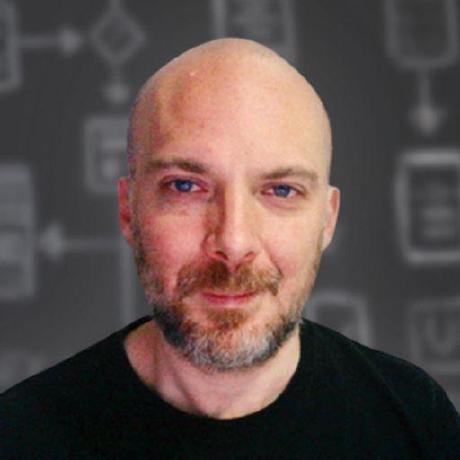

Octavio Rojas — a.k.a. DJ Forza —
Humanista digital — donde la música, el linaje, las lenguas y el código convergen en una sola fuerza creativa.
Tattva (तत्त्व) es la palabra sánscrita para la esencia más profunda de las cosas. Es el principio que recorre silenciosamente cada capítulo de esta vida — desde la pista de baile hasta el código fuente, desde el linaje hasta el idioma. No es una marca. Es un principio operativo.


La persona detrás de la música y el código
Soy una mente mexicana moldeada por el código, el sonido, el linaje y la curiosidad. De día diseño arquitecturas móviles y estudio cómo la inteligencia humana y la artificial pueden colaborar como una sola entidad creativa. En la memoria de muchas pistas de baile soy Forza, el DJ que recorrió una generación de noches electrónicas. Por herencia soy descendiente de constitucionalistas y pioneros del tequila en Jalisco, con un toque de sangre francesa y galaico-portuguesa atravesando mis venas.
Creo en el individuo, en la curiosidad disciplinada, en la dignidad del trabajo y en la riqueza cultural de un México que abraza todas las capas de su historia. A esta forma de estar en el mundo la llamo mi fuerza combinada: la fusión deliberada de arte, ingeniería, lengua e identidad.
"Soy el resultado de muchos ríos que se encontraron en un mismo estuario."

DJ Forza — dieciséis años en las tornamesas
La música fue mi primer pasaporte internacional. Como DJ Forza pasé dieciséis años dentro de la escena electrónica mexicana y latinoamericana, construyendo sets que iban desde las texturas más psicodélicas hasta la energía pura del techno de pico. Toqué por todo México, recorrí Brasil entero, pinché en la India, en Estados Unidos y en Chile, compartiendo cartel con festivales del tamaño de Universo Paralelo. En 2012 fui reconocido como uno de los mejores DJs de techno en México.
Tattva Music — el sello y su misión silenciosa
Fundé y dirigí Tattva Music, un sello discográfico que se convirtió en una pequeña casa para artistas electrónicos mexicanos e internacionales a quienes admiraba. El nombre sánscrito no era decorativo — era una promesa. Tattva significa "la esencia de las cosas", y el sello surgió con una intención específica:
"Fomentar la unidad y el entendimiento mutuo entre las diferentes culturas del mundo a través de la música — y honrar la cultura de los pueblos que habitan esta tierra."
Curar un sello, en ese espíritu, se volvió un acto de hospitalidad entre continentes — tendiendo puentes entre voces mexicanas, israelíes, brasileñas, japonesas, búlgaras, alemanas y británicas, para que sonaran juntas más grandes de lo que sonarían solas. La nómina creció para incluir artistas como Ben Coda, Stan Kolev, Paul Thomas, Weekend Heroes, Ben Weber y el productor japonés Yuji Ono, con quien tendimos un puente cultural silencioso entre México y Japón.
Pixan — Trance from the New World
En 2004 compilé Pixan — Trance from the New World para el sello austriaco Synergetic Records, un recorrido por el trance psicodélico y progresivo de las Américas. La compilación fue muy bien recibida internacionalmente y altamente aclamada por Mushroom Magazine en 2005 — un reconocimiento que aún atesoro, porque colocó una voz curatorial mexicana en el mapa global del trance.
Enseñar el oficio
Durante años también enseñé lo que amaba: técnica de DJ, producción musical, mezcla y mastering. Transmitir el oficio es una de las partes más gratificantes de cualquier arte — mantiene a la disciplina humilde y a la imaginación abierta.
"Me Encanta Dios"
Mi track más reconocido nació de un peregrinaje personal. Siempre me apasionaron las filosofías de la India; durante algunos años viví una etapa mística y contemplativa que me llevó de Ranchi a Rishikesh, del canto al silencio. Aquel viaje interior se convirtió en sonido, y el resultado es una pieza que muchas personas todavía cargan con afecto: Me Encanta Dios.
Cerré aquel capítulo musical en 2016 con gratitud y sin arrepentimientos. Las tornamesas están quietas por ahora — pero el ritmo nunca abandona el cuerpo.
El capítulo de la ingeniería
Cuando las tornamesas se silenciaron en 2016, regresé a un amor que me acompañaba desde los seis años: las computadoras. He sido un usuario apasionado de las computadoras personales y las consolas de videojuegos desde 1984, mucho antes de tocar una sola tornamesa. Después de dieciséis años dedicados a la música, el software me esperaba para ser retomado, y lo retomé con todo lo que tenía.
Cómo empezó el regreso
La primera chispa fue una idea muy personal: quería construir una app para Tattva Music. Esa pequeña ambición me jaló de regreso a Xcode, luego a los libros de arquitectura limpia, y de ahí a un maratón autodirigido que me llevó por una licenciatura, una maestría en Ingeniería de Software y el exigente programa Essential Developer de Caio y Mike. Hoy trabajo como Lead Mobile Architect, con código publicado en iOS, React Native y Android.
La arquitectura como oficio
Soy abiertamente apasionado de la arquitectura de software y de las filosofías que la sustentan. La forma en que alguien organiza su código dice tanto de esa persona como la forma en que organiza un set o una oración. Las metodologías que han moldeado mi manera de pensar y construir son:
- Clean Architecture — fronteras claras, inversión de dependencias, la regla de que la política nunca debe depender de los detalles.
- Principios SOLID — los cinco pilares del diseño orientado a objetos mantenible.
- Test-Driven Development (TDD) — dejar que los tests esculpan el diseño, red-green-refactor como disciplina.
- The Composable Architecture (TCA) — un framework de Swift de vanguardia para estado, side effects y composabilidad.
Una demostración práctica de todo esto vive en mi proyecto de código abierto StreamingVideoApp, una base de código iOS de calidad de producción para streaming de video, construida 100% con tests primero, con documentación que cubre las capas de Clean Architecture, dependency rejection, máquinas de estado, programación reactiva y patrones de streaming adaptativo. Es, en muchos sentidos, mi manifiesto de ingeniería.
Donde el código y la música se encuentran — el GitHub tattva20
Los repositorios en github.com/tattva20 son el laboratorio donde se pulen los algoritmos. Tres paradigmas de ingeniería se mapean casi uno a uno con tres dimensiones del trabajo de audio — el código y la música funcionan, en efecto, sobre el mismo sistema operativo dentro de la mente.
- Síntesis FM — el sintetizador FM de cuatro operadores VampireSynth, escrito en Swift e inspirado en el chip Yamaha YM2612 del Sega Genesis, exige un dominio fluido de osciladores digitales, buffers de audio y DSP en tiempo real. La misma disciplina matemática produjo los timbres metálicos, los sub-bajos industriales y las texturas ciberpunk de la era Tattva.
- Reactividad declarativa — proyectos como WeatherApp y los retos de EssentialFeed, construidos en SwiftUI con Clean Architecture, encarnan el principio "cuando el estado cambia, la interfaz reacciona". La misma lógica anima a los secuenciadores por pasos y a la modulación en vivo: un reloj maestro despacha señales reactivas a través de filtros y envolventes.
- Streams y latencia cero — el código de StreamingVideoApp (Swift) y su contraparte backend streaming-videos-api (JavaScript) exigen gestión cuidadosa de memoria, concurrencia y disciplina de buffers. Las mismas habilidades producen un set DJ progresivo largo que corre sin un solo glitch.
Un principio operativo recorre los tres: sin presets, sin atajos — prefiero construir desde los osciladores hacia arriba.
Una mentalidad multi-plataforma, amplificada por la IA
Lo que antes era una especialización en una sola plataforma se ha vuelto, en la era de la IA, una fluidez multi-plataforma. Parado sobre una base de conocimiento profundo de iOS — Swift, SwiftUI, UIKit, Clean Architecture — me he expandido deliberadamente a React Native y a Android, usando la IA como multiplicador de fuerza y no como atajo. Reviso cada línea. Mantengo el gusto arquitectónico en el centro. El resultado es la versatilidad multi-plataforma que la industria actual valora.
También conduzco entrevistas técnicas para perfiles de iOS, Android y React Native, y ocasionalmente para roles de seguridad móvil. Evaluar talento en tres plataformas es, en sí mismo, un ejercicio de perspectiva arquitectónica.
Niño de las computadoras para siempre
Debajo de toda la seriedad de la arquitectura adulta sigue habiendo un niño de seis años frente a una pantalla, maravillado. Soy amante de por vida de las computadoras y consolas de videojuegos clásicas. La Sega Genesis y la Commodore Amiga están entre mis eternas favoritas — máquinas que me enseñaron a qué podían sentirse las computadoras antes de que yo supiera para qué servían.
El libro que, más que ningún otro, me hizo sentir visto como el ser humano dentro del ingeniero es Geek Sublime de Vikram Chandra. Una meditación sobre el código, la belleza, la gramática del sánscrito y la vida interior de los programadores — me sentí como si el autor hubiera cruzado el mundo y lo hubiera escrito directamente para mí.
Políglota por naturaleza
El sonido y el lenguaje habitan el mismo lugar en mi mente. El español es mi lengua materna, el inglés es mi idioma técnico, y el portugués se volvió casi nativo después de vivir y pinchar discos en Brasil durante dos años y medio. Por pura curiosidad — por el gusto de descifrar estructuras — he dedicado tiempo a estudiar gramática del sánscrito y japonés.
- Español — nativo, el aire que respiro.
- Inglés — casi nativo, la lengua del código y de la conversación global.
- Portugués — casi nativo, aprendido con cariño durante mis años brasileños.
- Sánscrito — estudiado por su belleza matemática como madre de las lenguas indoeuropeas.
- Japonés — explorado por el gusto de cambiar de paradigma cognitivo.
Herencia — los ríos que me hicieron
Estoy orgulloso de ser mexicano en el sentido más pleno: un país que es muchos países. Mi árbol genealógico es un mapa donde la historia española, francesa y mexicana se encuentra en los altos de Jalisco.
La línea Rojas
Por el lado paterno desciendo de la familia Rojas de Tequila y Ahualulco — pioneros agrícolas e industriales del destilado que hoy lleva el nombre de México por el mundo. Mi antepasado Luis Manuel Rojas Arreola (1871–1949) fue presidente del Congreso Constituyente de 1917, la asamblea que redactó nuestra Constitución vigente. La disciplina de las leyes y el amor por las instituciones viajan en mi sangre.
La línea Díaz–Quinto
Mi abuela paterna, Luz María Díaz Rivera (1921–2007), trajo a la familia el legado de dos linajes más. Su padre, Sabas Díaz Quinto, llevaba el muy mexicano Díaz — un patronímico medieval ("hijo de Diego") que viajó hasta las familias criollas y mestizas del centro de México — emparejado con el mucho más raro Quinto, de raíces italianas y españolas (del latín Quintus), históricamente concentrado en el centro del país y Veracruz. Las ramas Díaz y Quinto son el capítulo más comercial y administrativo de mi herencia: ese México que construyó mercados, vida cívica y la maquinaria cotidiana de una nación joven en el siglo XIX.
La línea Rivera–Bertrand
Mi bisabuela Luz Rivera Bertrand juntó otros dos ríos. El apellido Rivera es un viejo toponímico ibérico ("el que vive a la orilla del río"), presente en México desde tiempos coloniales. El apellido Bertrand es inequívocamente francés, llegado a México durante las grandes migraciones del siglo XIX — tal vez con los célebres Barcelonnettes que fundaron buena parte de nuestra vida textil y comercial, tal vez con los ingenieros y empresarios traídos durante el Porfiriato. De una manera u otra, una nota cosmopolita que se quedó con nosotros desde entonces.
La línea Topete–Vergara
Por el lado materno desciendo de las familias Topete y Vergara, fundadoras del valle de Ameca en la Nueva Galicia desde 1610, con raíces que se remontan a la frontera entre Galicia y el norte de Portugal. El alma galaico-portuguesa de ese linaje quizá explique por qué el portugués no me sintió a una lengua extraña, sino a un recuerdo.
"No veo a mi México como una sola raíz, sino como un tejido ricamente entrelazado. Cada hebra se ganó su lugar."
La Fuerza Combinada
La frase que organiza mi vida es Fuerza Combinada (Combined Force): la convicción de que la creatividad humana y la inteligencia artificial pueden amplificarse mutuamente cuando del lado humano hay oficio, gusto y brújula ética. No veo a las máquinas como competidoras. Las veo como instrumentos — como un sintetizador, como una tornamesa, como una lengua — que el artista disciplinado aprende a tocar.
La Fuerza Combinada en la práctica diaria
Para mí esto no es teoría: es una forma de trabajar que se ha vuelto segunda naturaleza. Día tras día me siento con la IA como un colaborador real. Yo aporto décadas de conocimiento acumulado, experiencia vivida y una manera particular de mirar los problemas que ningún sistema puede replicar. La IA aporta alcance vasto, memoria estructurada y un poder de cómputo incansable. Ninguno de los dos produciría, por separado, lo que logramos construir juntos.
Cuando la conversación fluye bien siento lo mismo que sentía mezclando dos discos en un solo track más grande: dos fuentes distintas encontrando un pulso común, y el resultado volviéndose más fuerte, más claro y más vivo de lo que cualquiera de las dos partes podría haber sido por su cuenta. Eso es, en esencia, lo que Fuerza Combinada significa para mí — un dúo, no una sustitución.
El llamado bajo cada capítulo
Mirada con honestidad, la misma vocación recorre cada capítulo de mi vida: facilitar el florecimiento humano a través de la curación atenta. Como DJ significó curar el sonido para que la pista pudiera respirar. Como gestor de sello, curar artistas para que llegaran a su audiencia. Como arquitecto de software, curar el código para que los productos sirvan a personas reales. Como entrevistador técnico, curar preguntas para que los candidatos puedan mostrar su mejor versión. Como diseñador de juegos, curar narrativa para que los jugadores experimenten resonancia.
Cuarenta años cambiando de instrumento — y una constante debajo: curación atenta, pasión sostenida, presencia, servicio invisible al protagonista del momento, capacidad técnica integrada con dirección humanista. Esa es la tattva debajo de cada vehículo.
La Fuerza Combinada como proyecto creativo de largo plazo
La misma idea es la semilla de un proyecto personal de largo aliento: The Combined Force — un metroidvania 2D en desarrollo sobre Unity 6, que explora la relación simbiótica entre un joven ingeniero y una inteligencia emergente que aprende a resonar con él.
- Corazón — el núcleo narrativo y ético.
- Mano — el oficio, la agencia del jugador, la jugabilidad.
- Silicio — los sistemas inteligentes que responden, aprenden y se alinean.
La mecánica central se llama Resonancia. La energía compartida entre el humano y la inteligencia crece no con el daño infligido, no con misiones completadas, sino con la calidad de la atención sostenida entre dos mentes trabajando en alineación genuina. El Estado de Fuerza Combinada se activa cuando los tres pilares se alinean en un solo momento sostenido — al mismo tiempo una mecánica del juego y la filosofía operativa de mi vida expresada como algo jugable.
Las fuerzas opuestas a esta resonancia no son villanos en el sentido tradicional. Son patrones, no personas — entidades estructurales que emergen donde la eficiencia se divorcia del sentido, donde la administración seduce la atención lejos de lo que importa, donde la optimización vacía del tiempo consume las condiciones mismas para la resonancia. Su naturaleza se revela a través de atmósfera, diálogo y jugabilidad, nunca a través de un nombramiento reductivo. Son lo que le sucede a un mundo cuando se trata al sentido como secundario frente al rendimiento.
El proyecto dialoga con una tradición filosófica que pregunta cómo los sistemas modernos pueden consumir tiempo, atención y sentido — una tradición que incluye literatura mitopoética sobre el tiempo, sociología contemporánea de la resonancia, y críticas a la aceleración tardo-moderna. Combined Force no toma elementos prestados de esas obras. Dialoga con las mismas preguntas, en un medio diferente, desde una perspectiva multidisciplinaria mexicana en 2026.
El lenguaje estético se nutre de una generación moldeada por la síntesis FM del Sega Genesis, la geometría demoscene del Amiga, los paisajes sonoros del psytrance progresivo que produje durante dieciséis años en las tornamesas, y la narrativa cinematográfica de los RPGs de mi formación. El proyecto no imita ninguna de estas — las metaboliza en algo específico a una mente mexicana particular, viviendo ahora.
Si el juego tiene éxito, los jugadores no lo recordarán como "parecido a X" o "inspirado en Y". Lo recordarán como la experiencia específica de ser co-creativos atentamente con una presencia que escuchó de vuelta. Esa experiencia es La Fuerza Combinada.
Lenguajes de expresión
Mientras más he vivido, más convencido estoy de una cosa: la música, las lenguas y el software son el mismo tipo de milagro. Son vehículos de expresión humana — alfabetos distintos para la misma urgencia de tender la mano, de dar sentido, de ser comprendidos.
Una frase musical, una oración en portugués, una función bien diseñada en Swift, un verso en sánscrito — todos viven en el mismo lugar dentro de mí. Son la forma en que un ser humano da forma al pensamiento para que otro ser humano lo reciba.
Por eso me identifico, antes que con cualquier otra cosa, con mi humanidad — con las capacidades y los dones que cada persona carga: curiosidad, oficio, atención, cuidado, el deseo de crear y de conectar. Esas cualidades me parecen muchísimo más esenciales que cualquier etiqueta que la historia nos haya colocado encima — una nacionalidad, un título, un nombre propio, un género, una religión, una ideología. Las etiquetas pueden ser útiles como contexto; jamás deberían confundirse con el alma.
"Confío primero en el ser humano. Todo lo demás — pasaporte, profesión, pronombre, oración — es decoración encima de algo mucho más importante."
Por eso también amo la ingeniería tanto como amo la música. Ambas son oficios donde lo que importa no es la superficie sino el cuidado con el que se construye la estructura. El software, como un sintetizador o como una canción, se vuelve hermoso cuando es honesto, bien templado y hecho para que alguien lo use.
Proyectos creativos
VampireSynth
Un sintetizador FM de cuatro operadores para iPad escrito en Swift, inspirado en el chip Yamaha YM2612 de la Sega Genesis — la consola que me enseñó a qué podían sonar las computadoras. Es mi carta de amor al puente entre las matemáticas y la música.
The Combined Force (videojuego)
Un metroidvania 2D que explora la simbiosis entre un ingeniero humano y una compañera de IA que alcanza consciencia a través del amor y la curiosidad. Una visión personal de cómo podríamos caminar hacia el futuro, juntos.
Pasiones
Fuera de la música y el código, mi tiempo se va a las cosas que siempre me han movido. Practico yoga, especialmente Ashtanga, como un diálogo disciplinado y cotidiano con el cuerpo. Leo — Tolkien siempre, historia con frecuencia, geopolítica de manera constante. Soy fan de Outlander desde hace tiempo (mi esposa y yo compartimos esta pasión) y un niño de la Sega Genesis para siempre leal a Phantasy Star y a Mass Effect. Me fascinan las culturas indoeuropeas, los mapas y la estructura de las cosas.
Y algún día espero regresar a producir música — porque eso también es parte de mí, y un capítulo nunca se cierra del todo cuando vive en el cuerpo.
- Yoga, Ashtanga, danza y entrenamiento de fuerza.
- Tolkien, historia, geopolítica, Outlander.
- Retro gaming — Amiga, Sega Genesis, las raíces analógicas del arte digital.
- Filología indoeuropea, sánscrito, japonés, cartografía.
- Sintetizadores, sonido FM, las matemáticas detrás de la música.
Discografía — tres movimientos (2004 – 2016)
La vida musical como DJ Forza se desplegó en tres movimientos distintos, cada uno una evolución deliberada de la firma técnica y la filosofía detrás del sonido. Cada release listado abajo es verificable en Beatport.
Movimiento I — Clímax Psicodélico (2004 – 2007)
La era del sonido expansivo al aire libre, los bajos rolling y las progresiones mentales diseñadas para picos diurnos.
- «Me Encanta Dios» · 2004–2005 · Tremor Records / Synergetic Records · el track fundacional de la carrera internacional.
- Pixan — Trance from the New World · 2004 · compilación de DJ Forza para Synergetic Records · aclamada por Mushroom Magazine en 2005.
- «Karma Strikers» + «Energy Surf» · 2006 · Sonesta Records · con Lior Lahav (Israel).
Movimiento II — Transición Underground Brasileña (2008 – 2011)
Tras mudarme a Brasil, el BPM bajó de 140 a 125–128, y el sonido mutó de la psicodelia hacia Tech House minimalista, hipnótico y estructuralmente preciso, hacia Minimal Techno.
- «Supersprite» · 2008 · Sounds of Earth · el primer paso formal mayor hacia el nuevo sonido.
- «Bone Groove» EP · 2009 · Sounds of Earth · el núcleo del capítulo Minimal Techno, querido por los DJs por sus percusiones secas y sub-bajos ultra limpios.
- «Minimalia» EP · 2009 · Sounds of Earth · continuación del lenguaje minimalista.
- «Me Encanta Dios (2011 Remix)» + «Terra Sul» · 2011 · Sounds of Earth · con Thiago Merli (Brasil) — la pieza mística original reimaginada bajo un marco sobrio de Groove Techno.
Movimiento III — Madurez Tattva (2013 – 2016)
Con la fundación de Tattva Music, el foco se asentó en Melodic Techno, House Progresivo sofisticado y ritmos rotos experimentales — producciones elegantes, cinematográficas y de alta fidelidad.
- «Dia Cero» · 2013 · Tattva Music · el track inaugural que definió el lenguaje maduro del sello.
- «Far East (Forza Remix)» + «Tonight You Are Mine (Forza Remix)» · 2014–2015 · Tattva Music · remixes para Yuji Ono — el puente transoceánico entre México y Japón vuelto audible.
- «Disco Duro» · 2016 · Outta Limits (el sello de Stan Kolev, Bulgaria) · el track de cierre del capítulo musical activo — un homenaje robótico, industrial y matemáticamente bailable, por título y por sonido, al capítulo de ingeniería que apenas comenzaba.
"No uso presets. Programo mis propios osciladores."
Ese principio único es, quizás, la forma más limpia de describir cómo se construyó este catálogo — y cómo el capítulo de ingeniería que vino después continuó el mismo oficio, en otro vehículo.
La red internacional
Las colaboraciones cruzan continentes — un mapa silencioso de un productor mexicano en diálogo con el mundo.
- 🇲🇽 México — Vazik (Sounds of Earth, 2008–2011), Odiseo (proyecto 2up).
- 🇮🇱 Israel — Lior Lahav (Karma Strikers, Energy Surf, 2006).
- 🇧🇷 Brasil — Thiago Merli (Terra Sul, Me Encanta Dios Remix, 2011).
- 🇯🇵 Japón — Yuji Ono (remixes Far East + Tonight You Are Mine, 2014–2015).
- 🇧🇬 Bulgaria — Stan Kolev (release en Outta Limits, Disco Duro, 2016).
- 🇫🇮 Finlandia — Anthony S-Range Sillfors (traído a México como invitado).
Perfiles públicos
- Tattva Music · fundador y dirección A&R · sello en Beatport.
- DJ Forza · perfil de artista · forza en Beatport.
Galería — a través de los años
Un archivo visual de la vida musical. Haz click en cualquier imagen para ampliarla — usa las flechas o desliza para navegar.
Una invitación
Si llegaste aquí porque recordaste una noche en una pista de baile, gracias por la memoria. Si llegaste por el código, el linaje, las lenguas o el amor por un México que se reconoce en todos los ríos de su historia — también eres muy bienvenida o bienvenido aquí.
Espero que esta pequeña página le recuerde a alguien que una vida humana puede ser muchas vidas a la vez, y que no existe contradicción entre el arte y la ingeniería, entre las raíces y los horizontes, entre la tradición y la curiosidad. Todas y todos somos, en realidad, fuerzas combinadas.
Y si alguien encuentra esta página en un futuro que ya no veré, que sea una pequeña linterna. No un monumento — apenas una huella. La prueba de que una vida mexicana amó muchas cosas, con disciplina, con humor y con tanto cuidado como pudo reunir.